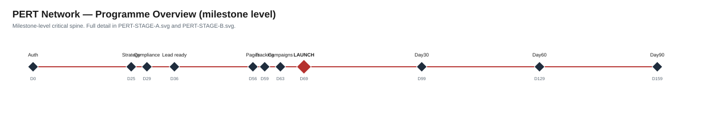
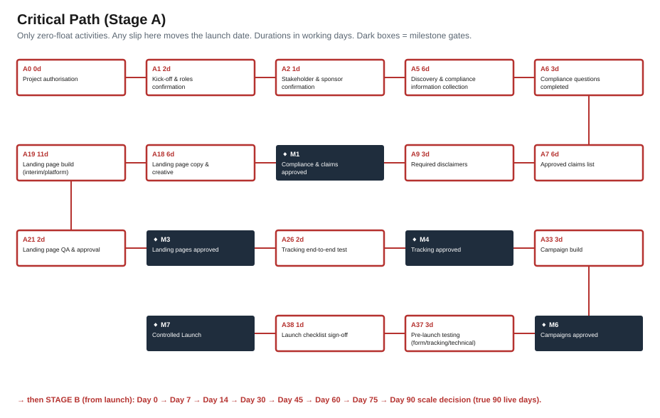
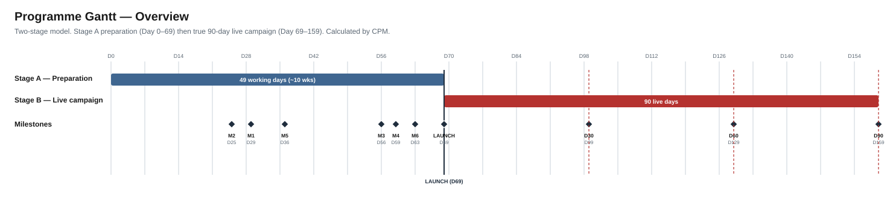
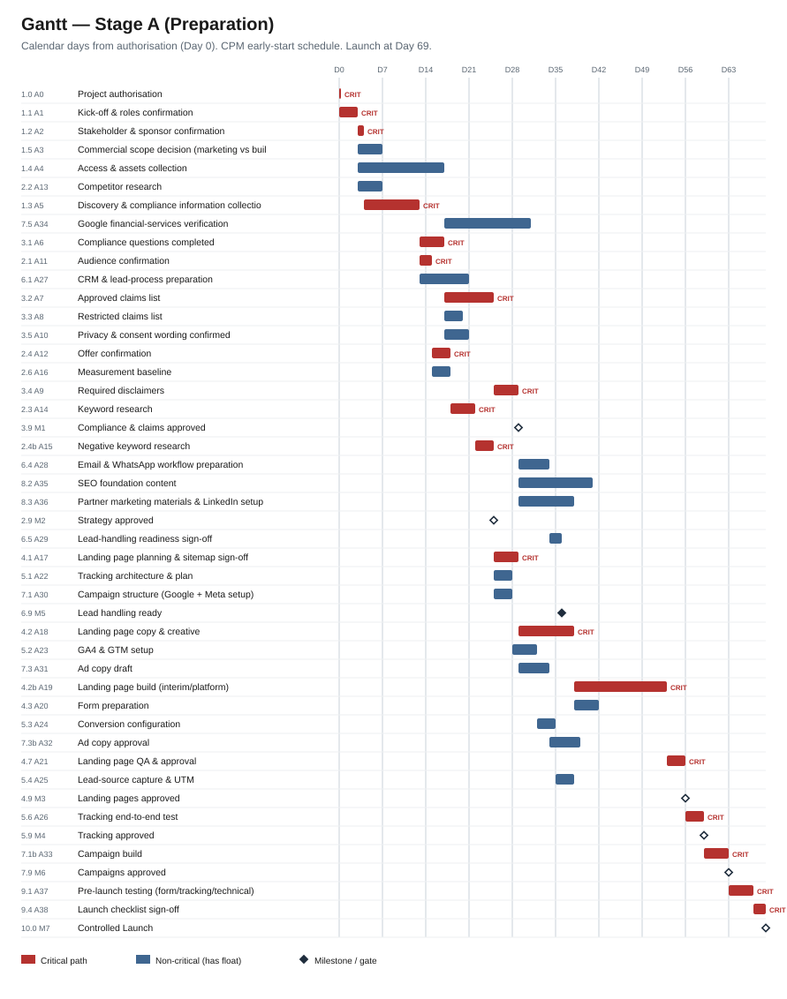
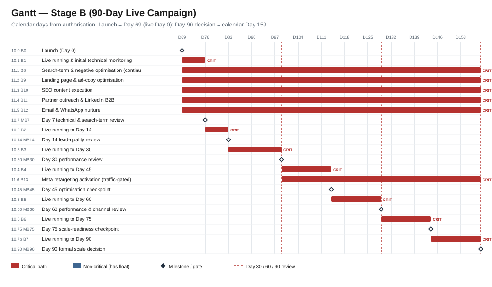
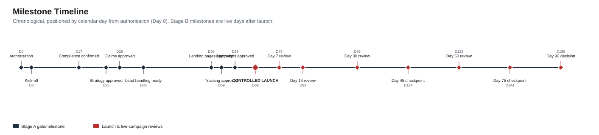
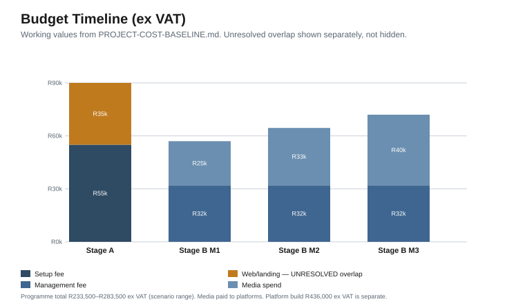
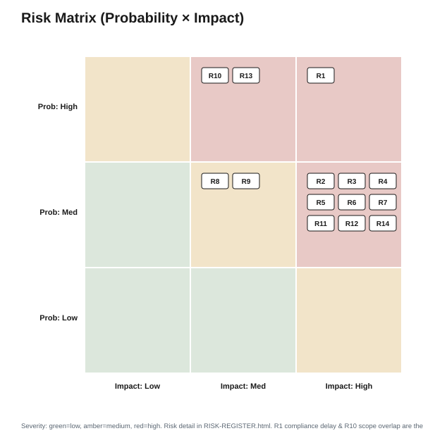

Project Management Pack — CPM/PERT Schedule, Gantt, Milestones, Budget, RACI, Risk
Prepared by Interon · Commercial in confidence · Working draft (not yet approved)
All schedule figures are calculated by Critical Path Method from the project activity network. All costs ex VAT.
Source of truth: CPM-PERT-MASTER-SCHEDULE.md, PROJECT-ACTIVITY-DATA.csv, PROJECT-GANTT-DATA.csv, PROJECT-COST-BASELINE.md.
| Milestone | Working day | ~ Week | Gate |
|---|---|---|---|
| Strategy approved (M2) | 18 | ~4 | — |
| Compliance & claims approved (M1) | 21 | ~5 | Hard gate |
| Lead handling ready (M5) | 26 | ~6 | Hard gate |
| Landing pages approved (M3) | 40 | ~8 | Hard gate |
| Tracking approved (M4) | 42 | ~9 | Hard gate |
| Campaigns approved (M6) | 45 | ~9 | Gate |
| Controlled launch (M7 = Stage B Day 0) | 49 | ~10 | Launch |
Calculated milestone timings (working day from authorisation). Hard gates must be true before launch.
| Checkpoint | Live day | ~ Calendar day |
|---|---|---|
| Launch | 0 | 69 |
| Day 7 technical & search-term review | 7 | 76 |
| Day 14 lead-quality review | 14 | 83 |
| Day 30 performance review | 30 | 99 |
| Day 45 optimisation checkpoint | 45 | 114 |
| Day 60 performance & channel review | 60 | 129 |
| Day 75 scale-readiness checkpoint | 75 | 144 |
| Day 90 scale decision | 90 | 159 |
Live days from launch; calendar day = 69 + live day. Reviews occur after true elapsed live days.

Milestone-level critical spine. Full detail in Stage A and Stage B PERT diagrams (SVG folder).






| Period | Setup | Landing pages | Management | Media | Total (ex VAT) |
|---|---|---|---|---|---|
| Stage A (prep) | R40,000–R55,000 | R0–R35,000 (unresolved) | R0 | R0 | R40,000–R90,000 |
| Stage B Month 1 | — | — | R32,000 | R25,000 | R57,000 |
| Stage B Month 2 | — | — | R32,000 | R32,500 | R64,500 |
| Stage B Month 3 | — | — | R32,000 | R40,000 | R72,000 |
| Programme total | R233,500–R283,500 | ||||
All ex VAT. Media paid by PropFlo to platforms. Platform build (R436,000 ex VAT) and subscriptions are separate. Landing-page/overlap ~R35,000–R50,000 is an unresolved commercial item.
R = ResponsibleA = AccountableC = ConsultedI = Informed
| Activity | PropFlo Sponsor | PropFlo Compliance/Legal | PropFlo Sales | Interon Project Lead | Interon Strategy | Interon Paid Media | Interon Content/SEO | Interon Design | Interon Dev/Tech |
|---|---|---|---|---|---|---|---|---|---|
| Proposal and budget approval | A | C | I | R | C | I | I | I | I |
| Compliance and claims | A | R | C | C | C | I | C | I | I |
| Strategy and research | C | C | C | A | R | C | C | I | I |
| Website and landing pages | A | C | C | R | C | C | C | R | R |
| Tracking and measurement | I | I | C | A | C | R | I | I | R |
| Paid search | I | C | I | A | C | R | I | I | I |
| Meta retargeting | I | C | I | A | C | R | C | C | I |
| SEO and content | I | C | I | A | C | I | R | I | I |
| Partner and LinkedIn | C | C | C | A | R | I | C | C | I |
| Email and WhatsApp follow-up | I | C | R | A | C | I | C | I | I |
| CRM and lead management | C | I | R | A | C | I | I | I | C |
| Reporting and optimisation | C | I | C | A | C | R | C | I | I |
| Project management | A | I | I | R | C | C | C | I | I |

| ID | Risk | Prob | Impact | Severity | Mitigation | Owner | Trigger / warning sign |
|---|---|---|---|---|---|---|---|
| R1 | Compliance approval delay | High | High | High | Front-load discovery; treat as gating milestone | PropFlo Compliance | Claims not returned by ~Day 21 |
| R2 | Claims/ads rejected by platform | Med | High | High | Conservative wording; platform verification early | Interon Paid Media | Ad disapprovals; verification requests |
| R3 | Poor landing page conversion | Med | High | High | Clear offer, trust signals, weekly form review | Interon Strategy | High traffic, low form completion |
| R4 | Slow lead response | Med | High | High | Confirm owner and 15-min/1-hr targets before launch | PropFlo Sales | Leads uncontacted same day |
| R5 | Poor lead quality | Med | High | High | Tight keywords, negatives, qualification form | Interon Paid Media | Many personal-loan/non-seller enquiries |
| R6 | Insufficient sales feedback | Med | High | High | Weekly feedback loop; status discipline | PropFlo Sales | Missing outcome updates |
| R7 | Tracking gaps | Med | High | High | Pre-launch end-to-end test; no launch until passed | Interon Dev/Tech | Events not firing in test |
| R8 | Budget pressure | Med | Med | Medium | Controlled daily budgets; monthly review | Interon Project Lead | Spend up, qualified leads flat |
| R9 | Advertising platform restrictions | Med | Med | Medium | Prepare documentation; expect verification | Interon Paid Media | Account/category checks |
| R10 | Scope overlap / double charge | High | Med | High | Resolve build-vs-marketing scope before sign-off | PropFlo Sponsor | Two quotes for the same site work |
| R11 | Delayed client approvals | Med | High | High | Approvals log; clear owners and dates | Interon Project Lead | Approvals overdue |
| R12 | CRM / lead process failure | Med | High | High | Confirm lead stages and owner before launch | PropFlo Sales | Leads lost or unstaged |
| R13 | Build/marketing timeline mismatch | High | Med | High | Synchronise build Phase 2 with launch, or interim pages | PropFlo Sponsor | Build not live when launch due |
| R14 | Weak or unclear offer | Med | High | High | Confirm offer structure before spend | PropFlo Sponsor | Low conversion despite good traffic |
Unresolved commercial items — not silently resolved. See BUDGET-VALIDATION.md and PROJECT-SCHEDULE-VALIDATION.md.